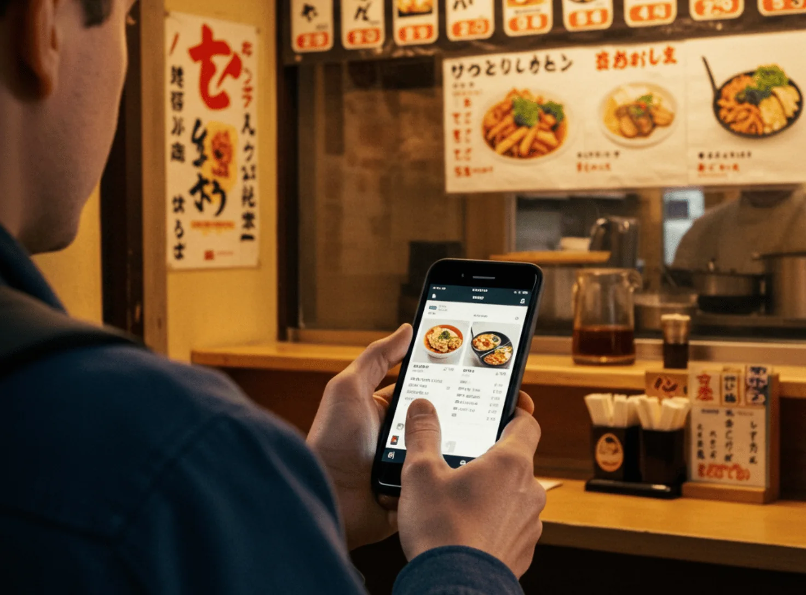
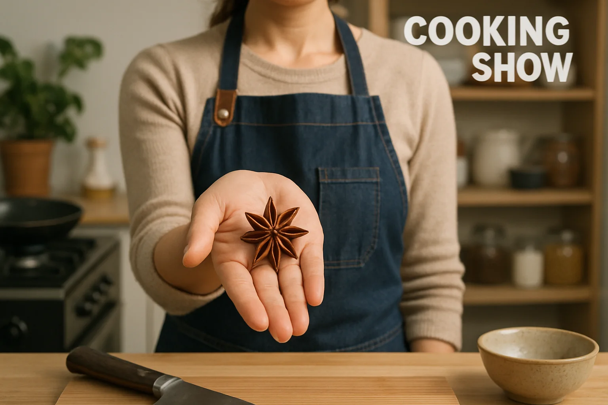
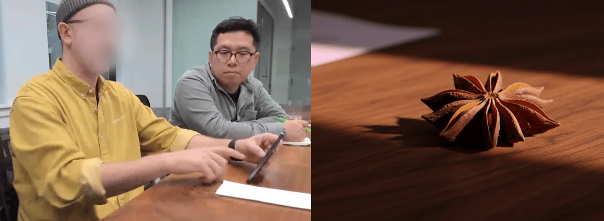
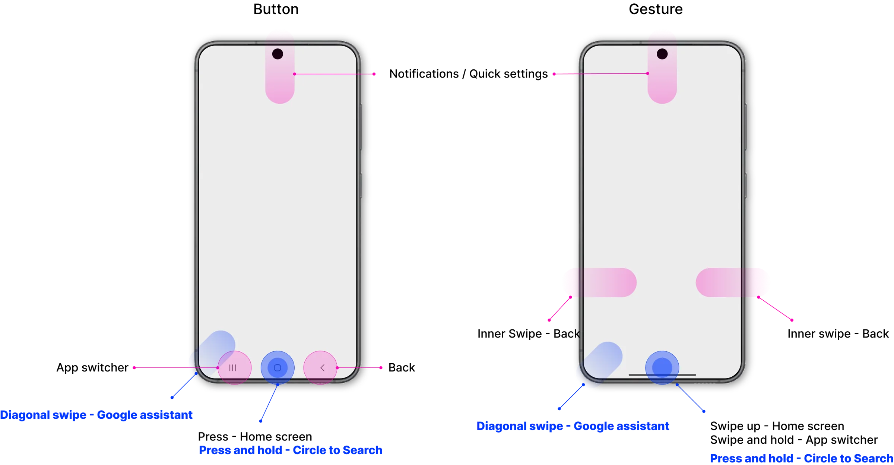
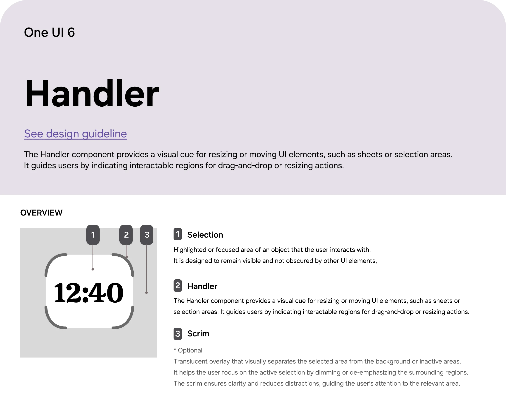
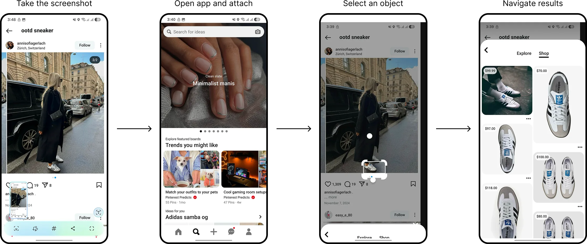
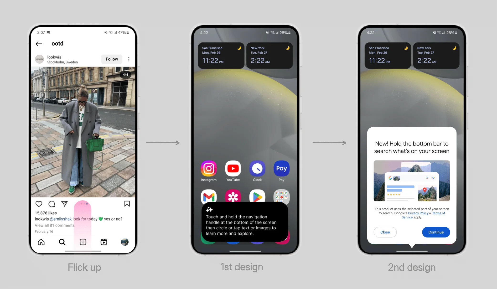

The gesture that made search part of the screen

Circle to Search lets you search anything on screen by drawing a circle around it. Google built the search experience. I led the Samsung side: choosing the entry gesture, designing the selection handler and its visual feedback, and building the onboarding that taught 50 million people to use it.
Typing was the bottleneck
You see an unfamiliar spice on a cooking show, or a menu in another language. Searching for it means leaving the app, describing it in words, and coming back. In our search survey, 48% said typing queries was tedious and 21% said switching apps took too long.


Goals
- Start a search without leaving what you're doing
- Get results from a single interaction
- Spend less time navigating and more time deciding
Finding the entry point
The entry gesture decides whether anyone finds the feature. I ran the brainstorms, built prototypes of three options, and concept-tested them.
Long-press side key
- Quick and one-handed
- Already reserved for another function
- Awkward for left-handed users
Swipe up from corner
- Quick and one-handed
- Conflicts with the home gesture
- Hard to remember
Long-press home handle
- Quick and one-handed
- Always-visible cue
- Small touch target
The head of design, engineering lead, and product planning aligned on the long-press of the home handle.

The selection handler
I mapped the whole gesture system on the device so other designers and stakeholders could see where the new interaction fit, then introduced a new component: the selection handler. A tinted scrim settles over the screen when you select something, pulling attention to what you circled.


Final design
Spot sneakers on Instagram, long-press the home handle, circle them, and see where to buy, without leaving the app.

Getting people to find it
A gesture nobody knows about doesn't exist. I added a contextual tooltip that appears after someone touches the home handle 10 times without discovering the feature. The first version was text-heavy and got ignored. I cut it to a short visual prompt, and engagement with the feature rose.

Lesson learned
Build, test, and prove instead of debating.
Prototypes and real feedback ended arguments faster than any meeting could, and led to better design.